image 1 — noise with a single bright column
A 1000 × 100 matrix that looks like static: essentially independent noise everywhere, except for one narrow bright vertical stripe. That single stripe is column 78, whose mean value is 19.9 while every other column averages about −0.09.
Size: n = 1000 rows × p = 100 columns · ‖X‖F = 705.5 · Variance in PC1: 80.2% · k for 95% / 99% of variance: 63 / 91
1. The original and its first ten approximations
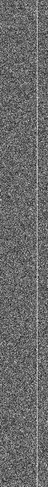
original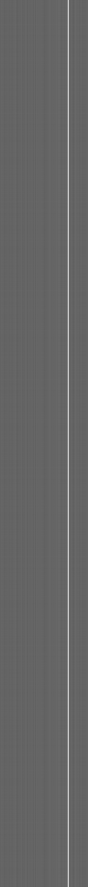
k = 1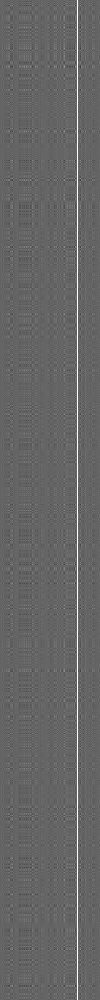
k = 2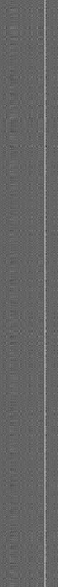
k = 3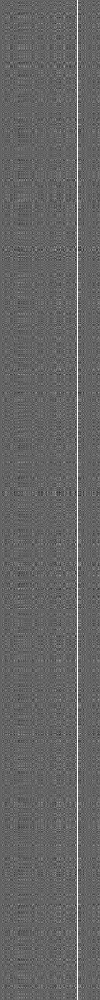
k = 4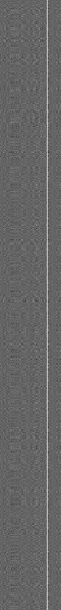
k = 5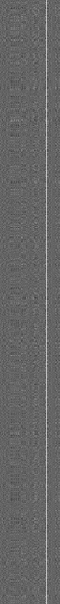
k = 6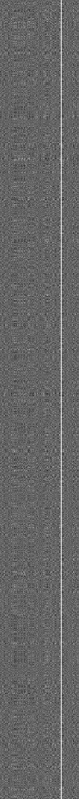
k = 7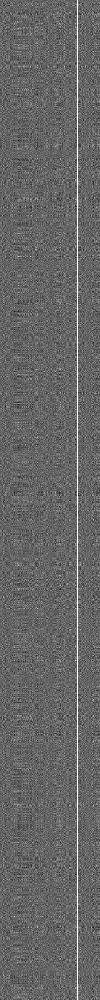
k = 8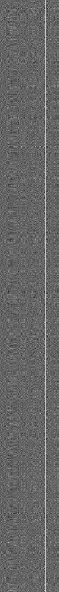
k = 9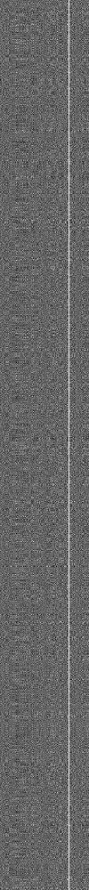
k = 10Watch the stripe, not the background. The rank-1 approximation reproduces the bright column and renders everything else as flat grey — it has found the only real structure in the image. From k = 2 onward the extra components add back speckle that never resolves into anything, because there is nothing there to resolve.
Beyond k = 10
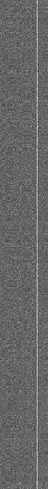
k = 15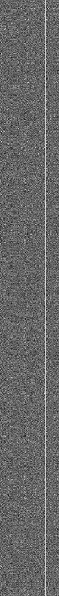
k = 20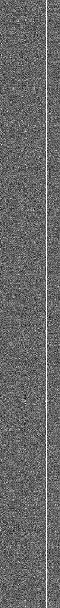
k = 30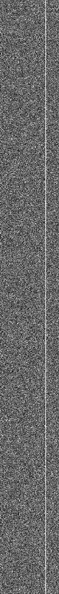
k = 50Grayscale mapping: for every panel of this image, black and white are pinned to the 2nd and 98th percentile of the original matrix, so all panels are directly comparable and a few extreme pixels cannot wash the rest out.
2. Approximation error against k
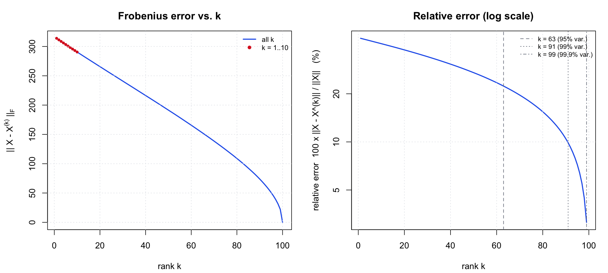
This is what an error curve looks like when a matrix is mostly noise. The first component removes about 20% of the total variation (the stripe), and after that the curve falls almost in a straight line: every remaining eigenvalue is roughly the same size (≈1600), which is the signature of white noise. Reaching 95% of the variance takes k = 63 of the 100 possible components, and driving the relative error below 10% would take k ≈ 95 — by which point you are storing more numbers than the original image contains (the break-even rank here is 91).
| k | ‖X − X(k)‖F | relative error | cumulative variance | numbers stored | vs. original |
|---|---|---|---|---|---|
| 1 | 313.96 | 44.50% | 80.19% | 1,100 | 1.1% |
| 2 | 311.28 | 44.12% | 80.53% | 2,200 | 2.2% |
| 3 | 308.62 | 43.75% | 80.86% | 3,300 | 3.3% |
| 4 | 306.00 | 43.38% | 81.18% | 4,400 | 4.4% |
| 5 | 303.39 | 43.01% | 81.51% | 5,500 | 5.5% |
| 6 | 300.76 | 42.63% | 81.82% | 6,600 | 6.6% |
| 7 | 298.16 | 42.26% | 82.14% | 7,700 | 7.7% |
| 8 | 295.63 | 41.91% | 82.44% | 8,800 | 8.8% |
| 9 | 293.09 | 41.55% | 82.74% | 9,900 | 9.9% |
| 10 | 290.56 | 41.19% | 83.04% | 11,000 | 11.0% |
| 15 | 278.03 | 39.41% | 84.47% | 16,500 | 16.5% |
| 20 | 265.64 | 37.65% | 85.82% | 22,000 | 22.0% |
| 30 | 240.98 | 34.16% | 88.33% | 33,000 | 33.0% |
| 50 | 191.41 | 27.13% | 92.64% | 55,000 | 55.0% |
| 100 (full) | 0.00 | 0.00% | 100.00% | 100,000 | 100.0% |
3. The first eigenvector and the first PC score
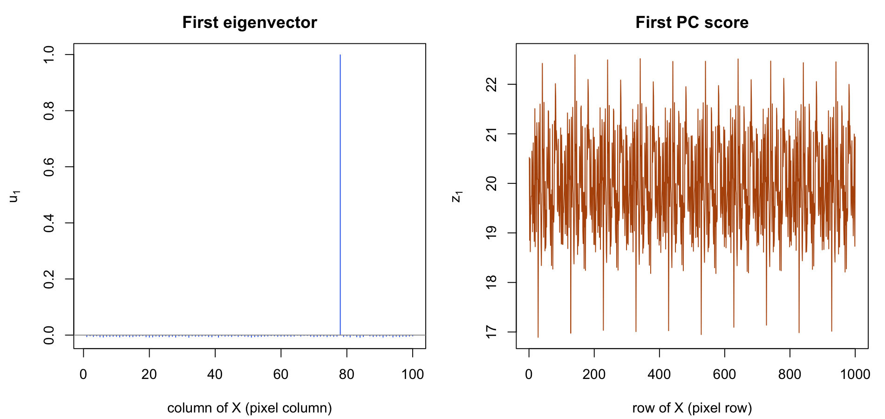
Interpretation
The first eigenvector is a spike. u1 puts a loading of 0.999 on column 78 and essentially zero (|loading| < 0.008) on all 99 other columns. So the first principal component is not a blend of pixel columns at all — it is column 78. That one column carries so much more magnitude than the surrounding noise that it dominates X'X by itself, which is why PC1 accounts for 80.2% of the total variation.
The first PC score is nearly constant. z1 sits at 19.95 ± 0.96 for all 1000 rows, i.e. every row crosses the stripe at about the same brightness — the stripe is uniform from top to bottom. Its correlation with the row averages of X is only 0.06, confirming that this component says nothing about overall row brightness; it tracks one column and ignores the rest of the image.
4. How large does k need to be?
k = 1. The rank-1 approximation captures 100% of the structure that exists in this image, and it does so with 1,100 numbers instead of 100,000 (1.1% of the original). Every component after the first is spent encoding noise: k = 10 still leaves a 41% relative error, and no practical k makes the reconstruction look like the original, because reproducing noise pixel by pixel is not compression. If the goal is "recover the signal", k = 1 is the answer; if the goal is "recover the exact matrix", PCA has nothing useful to offer here and you should store all 100 columns.